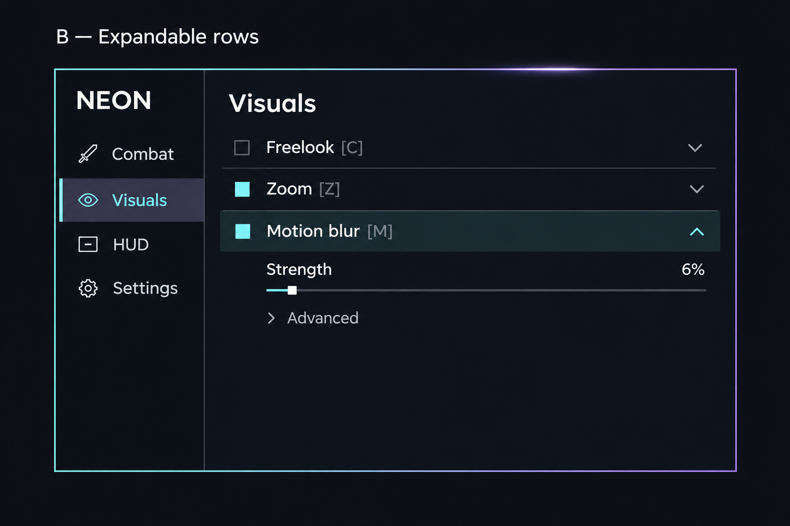

Approved option B — expandable rows
Compact physical default: 582 × 370 px. Native Inter at 16 px body, 15 px secondary, 19 px headings. The latest correction adds a bright animated cyan/violet outline with localized traveling bloom, gray sidebar selection and direct settings without Advanced folds. The enlarged concept below establishes the visual direction; packaged-client captures establish runtime appearance.
Visuals
Freelook [C]⌄
Zoom [Z]⌄
Motion blur⌃
Square toggles only enable/disable. Name and chevron expand/collapse. Bind chips capture independently. Actual keys remain user-controlled; Motion blur has no fabricated shortcut. HUD opens its editor directly. Appearance and Profiles expand inside Settings. Header dragging, invisible corner resizing, Escape, Ctrl+Z, and smooth wheel scrolling remain available. No scrollbars or footer controls.
